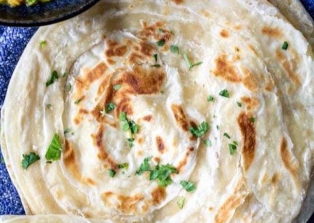

Paratha
Home
Paratha (pronounced [pəˈɾɑːtʰɑː]) is a flatbread native to South Asia, prevalent throughout the modern-day nations of India, Sri Lanka, Pakistan, Nepal, Bangladesh, Maldives, Afghanistan, Myanmar, Malaysia, Singapore, Mauritius, Fiji, Guyana, Suriname, and Trinidad and Tobago where wheat is the traditional staple. Paratha is an amalgamation of the words parat and atta, which literally means layers of cooked dough. Alternative spellings and names include parantha, parauntha, prontha, parontay, paronthi (Punjabi), porota (in Bengali), paratha (in Odia, Hindi), palata (pronounced [pəlàtà]; in Myanmar), porotha (in Assamese), forota (in Sylheti), farata (in Mauritius and the Maldives), roti canai, prata (in Southeast Asia), paratha, buss-up shut, oil roti (in the Anglophone Caribbean).

Ingredients
All purpose flour
salt to taste
wheat flour
chilli peppers
ghee
Nutrition Facts
Calories 326
Total Fat 9.8g
Calcium 25mg
Sodium 452mg
Total Carbohydrate 24.0g
Potassium 139mg
Iron 1.61mg
Procedure
In a large mixing bowl add 2 cups of whole wheat flour, 1 teaspoon of oil or ghee, ½ teaspoon of salt. Add ½ cup water in portions as you go on mixing and kneading the dough. Keep in mind not to add all of the water at once.
Mix and knead into a smooth, soft dough. Continue to add a bit more water a splash at a time if required while kneading. Cover with a kitchen towel and set the dough aside to rest for 30 minutes.
first flatten a medium-sized ball of dough on a lightly dusted board. Roll out to form a circle of about 4 to 5 inches in diameter.
Use a spoon to evenly spread some ghee or oil on the rolled dough.
Bring one side of the rolled dough towards the center and press lightly. Spread more ghee on the folded part.
Fold the opposite side of the rolled dough on top of the folded part. Press lightly, and again spread the ghee on this second folded part.
Next, fold the right side of the paratha dough to bring it towards the center. Spread some ghee on this fold, too.
Lastly, fold the left side on top of the right fold. You should have a nice little bundle of dough, like in the photo below.
Sprinkle some flour on the folded paratha.
Begin to roll. Add some more flour if needed while rolling so that the dough doesn’t stick.
Roll the dough into a square shape.
Once you’ve rolled out all of the paratha dough discs or square, heat a tawa (skillet) over medium heat on the stovetop. Working one at a time, place one of the paratha onto the tawa.
To test the hotness of the skillet, sprinkle a few pinches of flour in the center. if it browns in a few seconds, the tawa is hot enough to begin with the paratha roasting. With a kitchen napkin, wipe off these browned flour particles from the skillet before you begin roasting paratha.
The paratha will begin to puff up and bubble from the heat. Roast paratha on a medium to high heat and do regulate the heat as needed. A thin skillet or pan will need medium heat and a heavy skillet or pan will need medium-high to high heat.
When the bottom of the paratha is about ¼ of the way browned (you will see the paratha having some air pockets), flip it over with a spatula.
Spread on some ghee.
Flip again when the second side is about ½ way cooked. You will see brown spots now.
Now spread ghee on this side.
Flip again a couple of times until you see more brown spots and the paratha is cooked evenly. Transfer to a holding plate or a casserole container or a roti basket/box, and repeat the process to cook all of the flatbreads.
Serve the plain paratha right away while hot or store in a roti basket until ready to enjoy.
Expert Guide
Back ←
Scroll to Top ↑